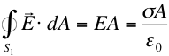
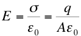
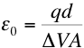
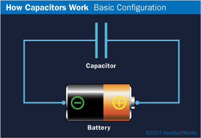
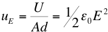
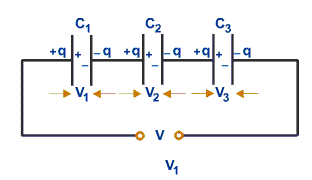
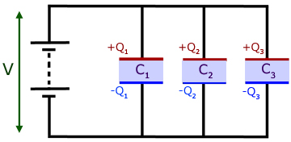
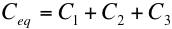

Calculating Capacitance
Assuming the plates are large enough so that the E field between them is uniform and directed perpendicular, then applying Gauss's Law over surface S1 we find,

where A is the area of S1 perpendicular to the E field and σ is the surface charge density on the plate (assumed uniform). Therefore,

everywhere between the plates.
where A and B are points, one on each plate, and we integrate along an E field line, d is the plate separation, A the plate area and q the total charge on either plate.
Note that since the Coulomb is a very large unit of charge the Farad is also a very large unit of capacitance. Typical capacitors in circuits are measured in μF (10-6) or pF (10-12).


Energy and Capacitors
If a capacitor is placed in a circuit with a battery, the potential difference (voltage) of the battery will force electric charge to appear on the plates of the capacitor. The work done by the battery in charging the capacitor is stored as electrical (potential) energy in the capacitor. This energy can be released at a later time to perform work.

which is equal to the stored electrical potential energy, U.
(Ad) is the volume between the plates, therefore we define the energy density,

Combinations of Capacitors
It is common to find multiple combinations of capacitors in electrical circuits. In the simplest situations capacitors can be considered to be connected in series or in parallel.
When different capacitors are connected in series the charge on each capacitor is the same but the voltage (pd) across each capacitor is different

In this situation, using the fact that V = V1 + V2 +V3 we can show that, as far as the voltage source is concerned, the capacitors can be replaced by a single "equivalent" capacitor Ceq given by,
For capacitors connected in parallel it is the voltage which is same for each capacitor, the charge being different.

Using the fact that QTotal= Q1 + Q2 + Q3 we can show that the equivalent capacitor, Ceq is given by,


At the electric company: "We would be delighted if you
send in your bill. However, if you don't, you will be."
Dr. C. L. Davis
Physics Department
University of Louisville
email: c.l.davis@louisville.edu